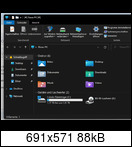

Page 1 of 2
Windows 11 Issue
Posted: Sun Aug 22, 2021 8:51 am
by MeTaLxMaNiAC
Hi together,
firstly big thanks to DavidXanatos for continuing Sandboxie, to me it is stil one of most important applications

Second is i know Windows 11 is quiet early and there is no support jet but u should know that Sandboxie Plus already work quiet good wiith it together, on Win11 Pro Build 22000.132 and later there is a small Problem if u want to acces the Windows Explorer over Sandboxie

it stays around 1,5 - 2 minutes on this state after Explorer runs normally

I know it's complaining on a high level, but the problem can easily be simulated or recreated thats why wanted report here.
regards
Andi
Re: Windows 11 Issue
Posted: Thu Sep 02, 2021 7:50 am
by DavidXanatos
Yes, I can reproduce this on my test VM as well,
but I'm not sure if i should try fixing it now.
you see... the new windows ui is somehow hacked in as a overlay, like they needed to make it public right now and did not have time to do it properly, so I actually expect MSFT to change everything before a final release.
On the other hand its scheduled for in a month or so, so I'm not sure, may be they will leave the crappy solution in place because well more CPU and GPU usage means more PC sales LOL...
Anyhow I'll look into that issue once W11 is finally final and released to the public.
Re: Windows 11 Issue
Posted: Mon Oct 11, 2021 6:43 am
by FayneAldan
Still happening on Windows 11 release.

Re: Windows 11 Issue
Posted: Fri Oct 15, 2021 6:42 am
by DavidXanatos
Yea I have noticed

will have to look into it
Re: Windows 11 Issue
Posted: Mon Oct 18, 2021 2:08 pm
by trenzer
I hope the Windows Explorer problem would be solved in a beta release
Re: Windows 11 Issue
Posted: Sat Nov 06, 2021 6:54 pm
by kimpurcel
Having the same issue. Hope this is fixed soon.
Re: Windows 11 Issue
Posted: Mon Nov 08, 2021 8:17 pm
by DavidXanatos
trenzer wrote: ↑Mon Oct 18, 2021 2:08 pm
I hope the Windows Explorer problem would be solved in a beta release
it kind of is just in a windows beta release, a.k.a. an insider build, the last 2 or 3 builds do no longer have the explorer problem when sandboxed
Re: Windows 11 Issue
Posted: Sun Feb 20, 2022 11:39 am
by MeTaLxMaNiAC
Thank you very much for the answer.
But probally not that easy to fix because process monitor records quiet a lot just by starting it, needs probally a solution that functions from the second pid can be start faster in there to much dlls and extra functions...
But to me it is fine as is, for lightweight Web Sandbox stil the best
Re: Windows 11 Issue
Posted: Thu Jun 16, 2022 9:27 am
by MeTaLxMaNiAC
In the menatime the problem is fixed in Windows 11 22H2.
Less work for Davos

Re: Windows 11 Issue
Posted: Mon Dec 11, 2023 12:49 pm
by Bellatornus
It's awesome that you appreciate Sandboxie, and thanks for sharing your experience with it on Windows 11.
It's not uncommon to encounter some quirks when using software on a new operating system. That delay with Windows Explorer does sound a bit annoying, but it's great that you're sharing this info. It can be super helpful for others who might run into the same issue.

{kind=link}